Electrical - Battery Charging And Testing Information
27 12 03May 21, 2012
2011894 Supersedes T.B. V271102 dated April 25, 2011 to remove Routan information and applicability.
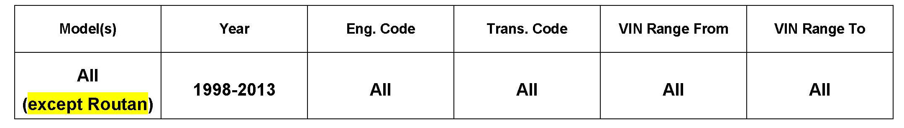
Vehicle Information
Condition
Battery, Testing and Charging Using Midtronics VAS6161, MCR340V Analyzer or InCharge 940 Charging Station
Note:
This technical bulletin covers testing and repair procedures for multiple vehicle lines, model years and engine combinations. To prevent mis-diagnosis, you must ensure that the testing/repair procedure is applicable to the vehicle you are servicing.
Technical Background
The VAS6161, MCR340V and In-Charge 940 (INC-940) are the only VW approved battery testers and chargers that can be used to test and charge batteries in VW vehicles. Use of non-approved battery testers and chargers is
not allowed, as internal battery damage may occur.
Production Solution
No production change required.
Service
WARNING
Danger of injury! Prior to handling or servicing batteries, read, understand and observe all Warnings and Safety Measures for lead-acid batteries.
Note:
In order to prevent damage to battery or vehicle, observe battery type descriptions and notes.
Tip:
^ Switch off all electrical consumers.
^ Switch ignition OFF and remove ignition key.
Battery Testing/Charging Sections:
2-1 All Models 1998 - 2013, Except Passat/CC 3.6L, Eos 3.2L, Golf VR4/R32, Touareg, and Phaeton
2-2 Passat, Passat Wagon and CC with 3.6L 2006-2013 (Rear Battery)
2-3 Eos 3.2L 2006 - 2008
2-4 Golf VR4/R32 2008
2-5 Touareg 2004 - 2013
2-6 Phaeton 2003 - 2006
2-7 MCR340V, INC-940, Trouble Shooting Error Messages
2-1 All Models 1998 - 2013, Except Passat/CC 3.6L, Eos 3.2L, Golf VR4/R32, Touareg, and Phaeton
Tip:
DO NOT remove battery from vehicle to test; always test battery in vehicle except for the following conditions:
^ Battery was removed for a separate repair prior to performing battery test.
^ Over the counter (after market) parts.
When testing or charging a battery either installed or removed from vehicle select appropriate battery type:
^ Select "Standard" (Lead-Acid) function for ALL NON-AGM batteries.
^ Select "AGM" function for Absorbent Glass Mat (AGM) batteries with "AGM" on battery label.
Always use actual DIN rating as shown on battery label -arrow-.
Tip:
Label shown is for example only. DIN or SAE specifications may vary from battery to battery.
If DIN rating is not shown:
^ Use SAE value as printed on the battery label.
If using SAE value rating:
^ Midtronics tester menu option must be changed to achieve accurate results.
^ A change from DIN to SAE can be made from the "Other" menu option on Midtronics tester.
2-2 Passat, Passat Wagon and CC with 3.6L 2006-2013 (Rear Battery)
Testing/Charging at Battery
Tip:
DO NOT remove battery from vehicle to test; always test battery in vehicle except for the following conditions:
^ Battery was removed for a separate repair prior to performing battery test.
^ Over the counter (after market) parts.
Passat Sedan, CC, 3.6L only 2006-2011:
^ Select Lead Acid Battery for 3.6L engine (located in left side of trunk). 450 DIN.
B6 Passat Wagon 3.6L only 2006-2008:
^ Select Regular or AGM (Absorbed Glass Mat) for 3.6L engine (located in left side of trunk) as specified on the battery label. 480-520 DIN AGM.
When testing or charging battery installed in vehicle:
^ DO NOT Test/Charge from Remote Location.
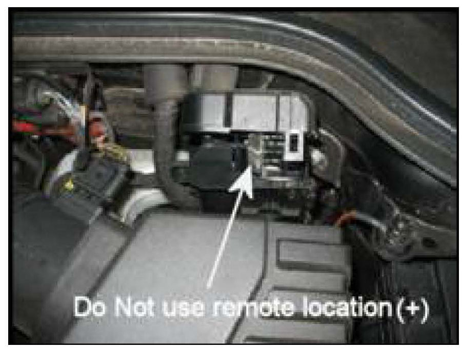
^ (3.6L) DO NOT use remote location (+) -arrow-.
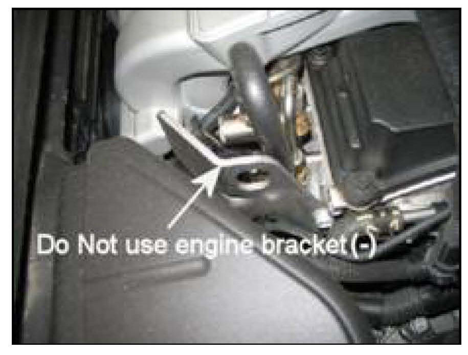
^ (3.6L) DO NOT use engine bracket (-) -arrow-.
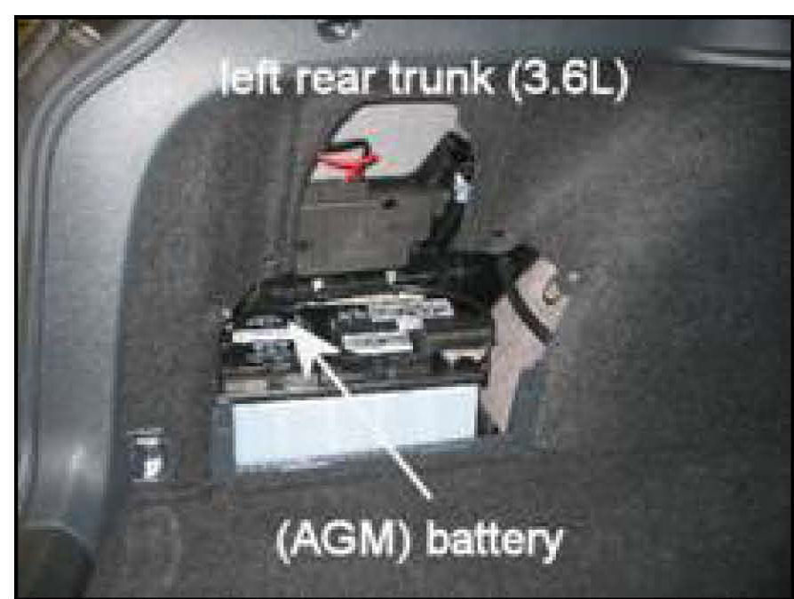
Always use actual DIN rating as shown on battery label:
^ (3.6L) Test/charge battery located in left rear trunk -arrow-.
^ Passat Sedan / Passat CC 3.6L uses a lead acid battery 450 DIN.
^ B6 Passat Wagon 3.6L uses an AGM battery. 480 or 520 DIN.
2-3 Eos 3.2L 2006 - 2008
Testing/Charging at Battery (Two 6-Volt batteries)
Eos 3.2L engine is equipped with two 6-volt AGM batteries which are connected in series to achieve 12-volts. The battery system must always be treated as a 12-volt battery system. Never attempt to charge only one 6-volt battery. If battery replacement is necessary, never replace one 6-volt battery; both batteries must be replaced as a pair!
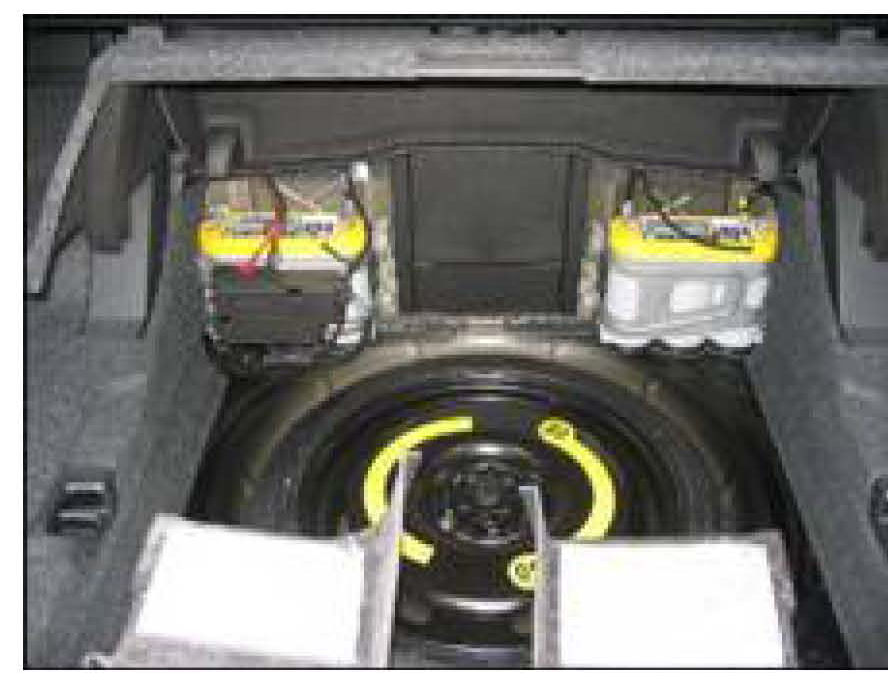
^ Eos 3.2L AGM batteries shown are connected in series.
Tip:
DO NOT remove battery from vehicle to test; always test battery in vehicle except for the following conditions:
^ Battery was removed for a separate repair prior to performing battery test.
^ Over the counter (after market) parts.
Testing/Charging 6-Volt Batteries Out of Vehicle:
If batteries have been removed from vehicle, never attempt to test/charge one 6-volt battery; as stated above. Treat batteries as a 12-volt system.
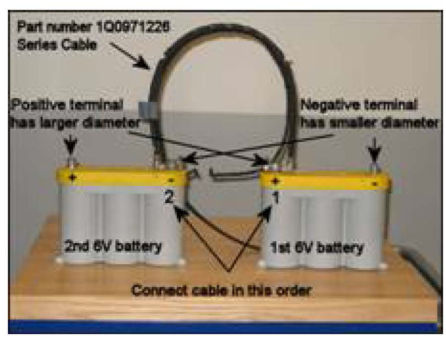
^ Connect cable (Part No: 1Q0971226) to inner battery terminals.
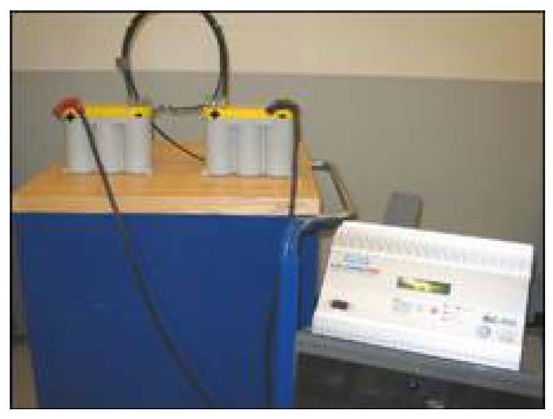
^ Connect battery tester.
Tip:
Cable has (+) and (-) stamps on each terminal. Positive (+) terminal is a larger diameter than Negative (-) terminal. DO NOT attempt to force the wrong terminal of harness onto a battery terminal if it does not fit.
1. Connect cable with positive (+) stamp to inner positive (+) terminal of 1st battery. When doing so, ensure that the other end of the cable (negative) does not make contact with ground or any object. Tighten to 6Nm.
2. Connect the negative (-) terminal of the cable to the inner negative (-) terminal of the 2nd battery. Tighten to 6Nm (53 in.lbs).
3. Connect Midtronics tester positive (+) clamp (red color) to outer positive (+) terminal of 2nd battery.
4. Connect Midtronics tester negative (-) clamp (black color) to outer negative (-) terminal of 1st battery.
When testing/charging is completed:
1. Remove Midtronics tester negative (-) clamp (black color).
2. Remove Midtronics tester positive (+) clamp (red color).
3. Remove battery cable negative (-) connection at 2nd battery negative (-) terminal.
4. Remove battery cable positive (+) connection at 1st battery positive (+) terminal.
Testing/charging 6-Volt Batteries in Vehicle:
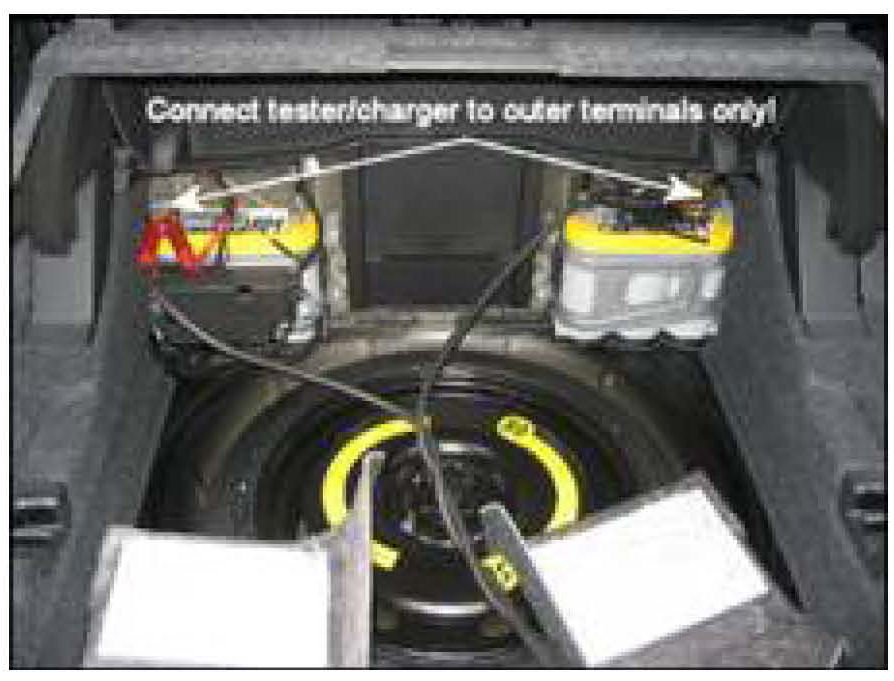
INC-940
1. Connect Midtronics tester positive (+) clamp (red color) to outer positive (+) terminal of battery.
2. Connect Midtronics tester negative (-) clamp (black color) to outer negative (-) terminal of other battery.
MCR340V and VAS6161
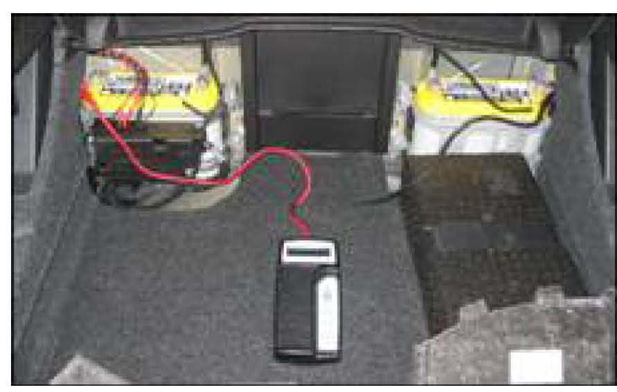
1. Connect Midtronics tester positive (+) clamp (red color) to outer positive (+) terminal of battery.
2. Connect Midtronics tester negative (-) clamp (black color) to outer negative (-) terminal of other battery.
Testing/Charging In or Out of Vehicle:
Always verify using DIN rating as shown on battery label.
^ Select AGM for 3.2L engine (located in the trunk, one 6-volt battery on each side of the ski-chute). 380 DIN.
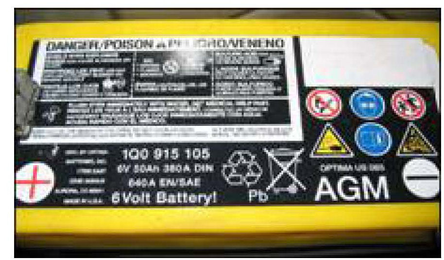
Tip:
Label shown is for example only. DIN or SAE specifications may vary from battery to battery.
Tip:
Two 6-volt batteries are connected in series to achieve 12-volts, the same current value will flow through each battery. As a result, only use a DIN value of 380A, DO NOT double or halve this value when entering data into
Midtronics tester.
If DIN rating is not shown:
^ Use SAE value as printed on battery label.
If using SAE value rating:
^ Midtronics tester menu option must be changed to achieve accurate results.
^ A change from DIN to SAE can be made from the "Other" menu option on Midtronics tester.
When testing or charging battery installed in vehicle:
^ DO NOT Test/Charge from Remote Location (3.2L).
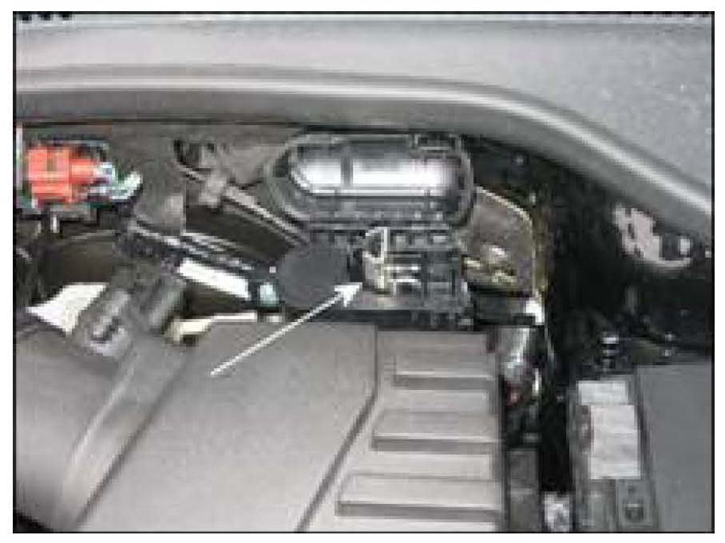
^ (3.2L) DO NOT use remote location (+) -
arrow-.
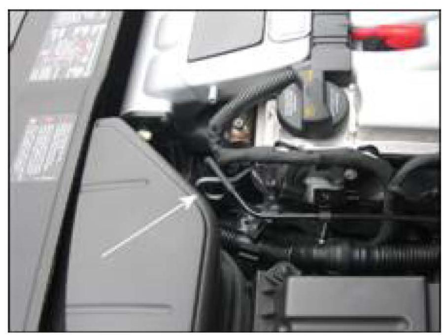
^ (3.2L) DO NOT use engine bracket (-) -arrow-.
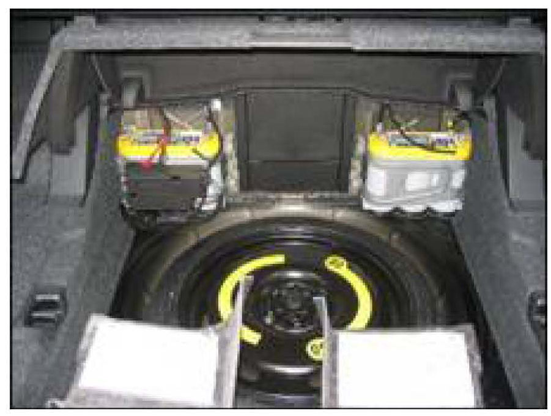
^ (3.2L) Test/charge AGM battery located in
trunk - one 6V battery located on each
side of ski chute, as shown.
2-4 Golf VR4/R32 2008
Testing/Charging at Battery
Tip:
DO NOT remove battery from vehicle to test; always test battery in vehicle except for the following conditions:
^ Battery was removed for a separate repair prior to performing battery test.
^ Over the counter (after market) parts.
When testing or charging battery either installed or removed from vehicle:
^ Select Standard (Lead-Acid) battery. Located in right trunk area under spare tire and tool kit.
^ Always use actual DIN rating from battery label.
When testing or charging battery installed in vehicle:
^ DO NOT Test/Charge from Remote Location (3.2L).
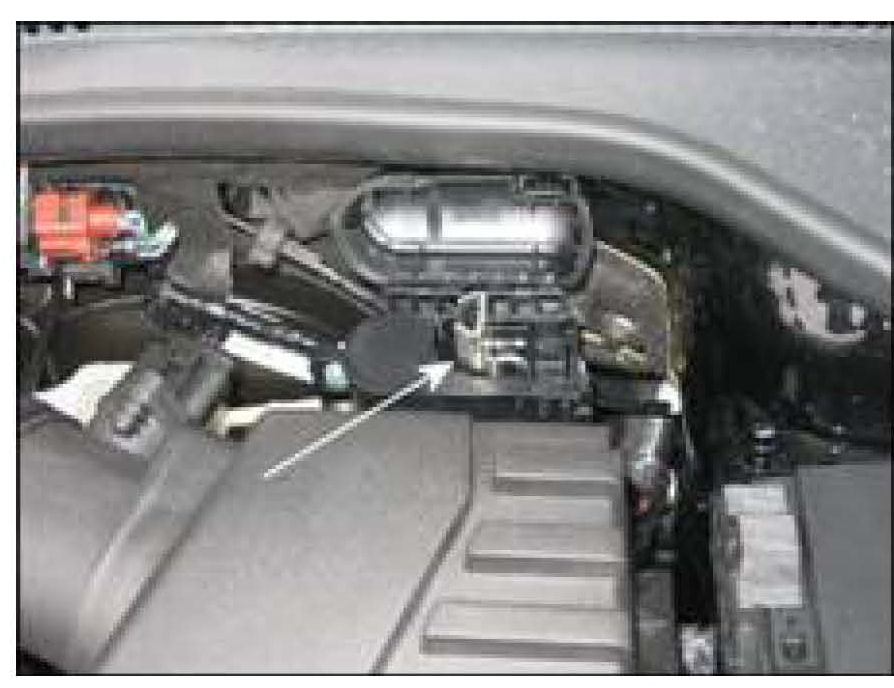
^ (3.2L) DO NOT use remote location (+) -arrow-.
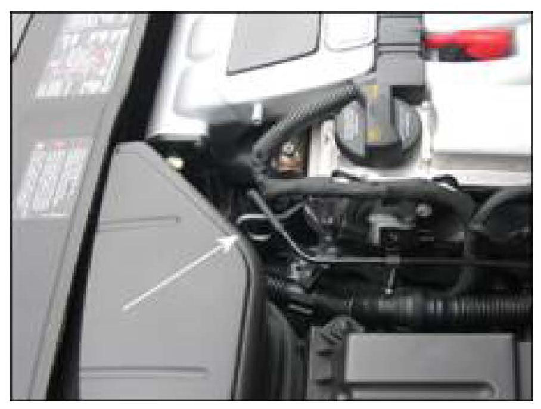
^ (3.2L) DO NOT use engine bracket (-) -arrow-.
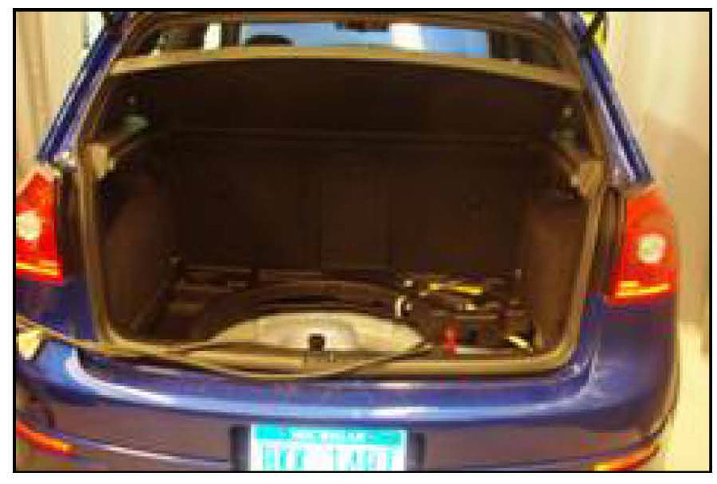
Always use actual DIN rating from battery label.
^ (3.2L) Test/charge (Lead Acid) battery located in the trunk.
2-5 Touareg 2004 - 2013
Testing/Charging at Battery
Single System - 3.0L (TFSI), 3.0L (TDI), 3.6L, and 4.2L Engines.
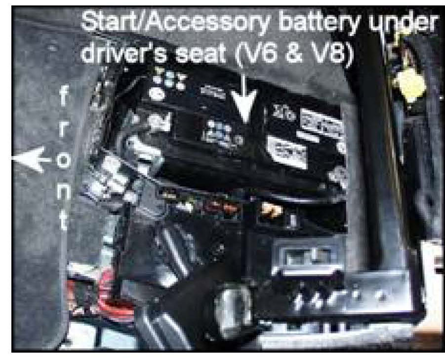
2.51 2004-2007 Start/Accessory battery
Always use actual DIN rating as shown on
battery label.
Select Standard (Lead-Acid) for 3.0L TFSI
3.0 TDI, 3.6L, and 4.2L engines (Battery
located under driver's seat).
Tip:
MY2004-2010 3.6L, 4.2L (450DIN)
MY 2009-2013 3.0L TDI (520DIN)
MY2011-2013 3.0L, 3.6L (520DIN)
MY2011-2013 3.0L TFSI Hybrid (420DIN)
Dual System - 5.0L (TDI) Engine (2004-2008)
Accessory battery
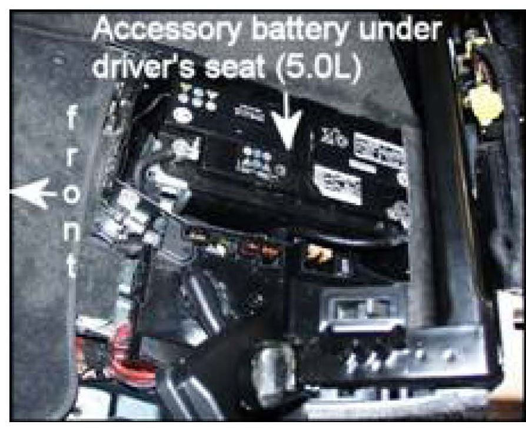
Select Standard (Lead Acid) for 5.0L (TDI)
(located under the driver seat). 520 DIN
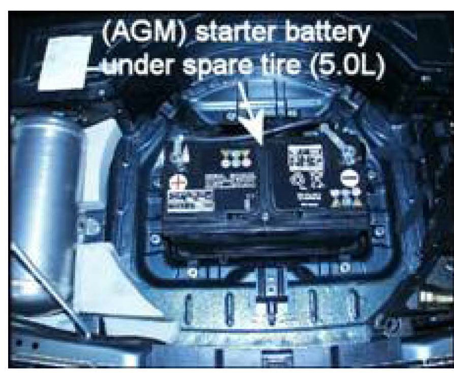
Starter battery
For 5.0L (TDI) engine (battery in trunk without
rim). AGM 520 DIN. (PR J2R)
For 5.0L (TDI) engine (battery in trunk
located under spare tire). Standard (Lead
Acid) 450 DIN. (PR J2Q)
Note:
Starter battery must be checked
independently of accessory battery.
Starter battery cannot be tested or charged via
the remote location in engine compartment.
To test or charge starter battery, go directly
to battery terminals.
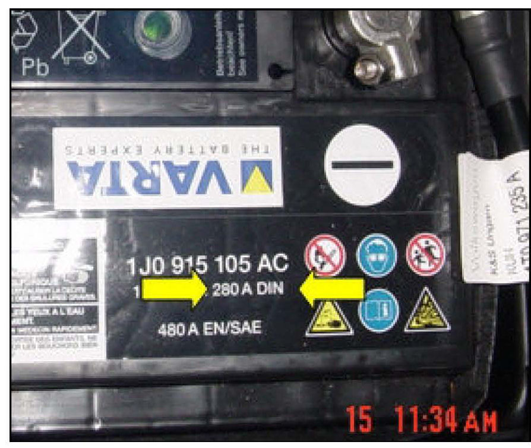
Always use actual DIN rating as shown on
battery label -arrow-.
Tip:
Label shown is for example only. DIN or SAE
specifications may vary from battery to
battery.
If DIN rating is not shown:
^ Use SAE value as printed on battery label
^ If using SAE value rating:
^ The Midtronics tester menu option must be changed to achieve accurate results.
^ A change from DIN to SAE can be made from the "Other" menu option on Midtronics tester.
Testing/Charging from Remote Location (Reduced DIN Rating Requirement)
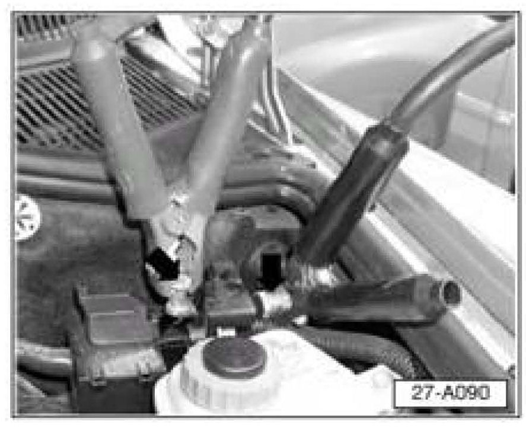
When using remote location terminals -
arrows-, located in engine compartment,
always reduce DIN rating on MCR340V or
INC-940 testers.
^ 3.6L, and 4.2L engines: 270 DIN.
^ 3.0L TDI, 5.0L(TDI) engine: 295 DIN.
^ MY2011 3.6L engine: 295DIN
Note:
For 5.0L (TDI) engine (dual battery system), starter battery cannot be tested or charged via remote location in engine compartment.
To test or charge starter battery, go
directly to battery terminals.
Tip:
Use of these reduced DIN ratings are required to compensate for the internal battery manager and/or the extended length of cable due to battery location.
2-6 Phaeton 2003 - 2006
Testing/Charging at Battery
Tip:
DO NOT remove battery from vehicle to test; always test battery in vehicle except for the following conditions:
^ Battery was removed for a separate repair prior to performing battery test.
^ Over the counter (after market) parts.
When testing or charging battery either installed or removed from vehicle:
^ Select Standard (Lead-Acid) for 4.2L and 6.0L engines (located in right front trunk).
^ Select AGM (Absorbed Glass Mat) for 4.2L and 6.0L engines (located in left side trunk).
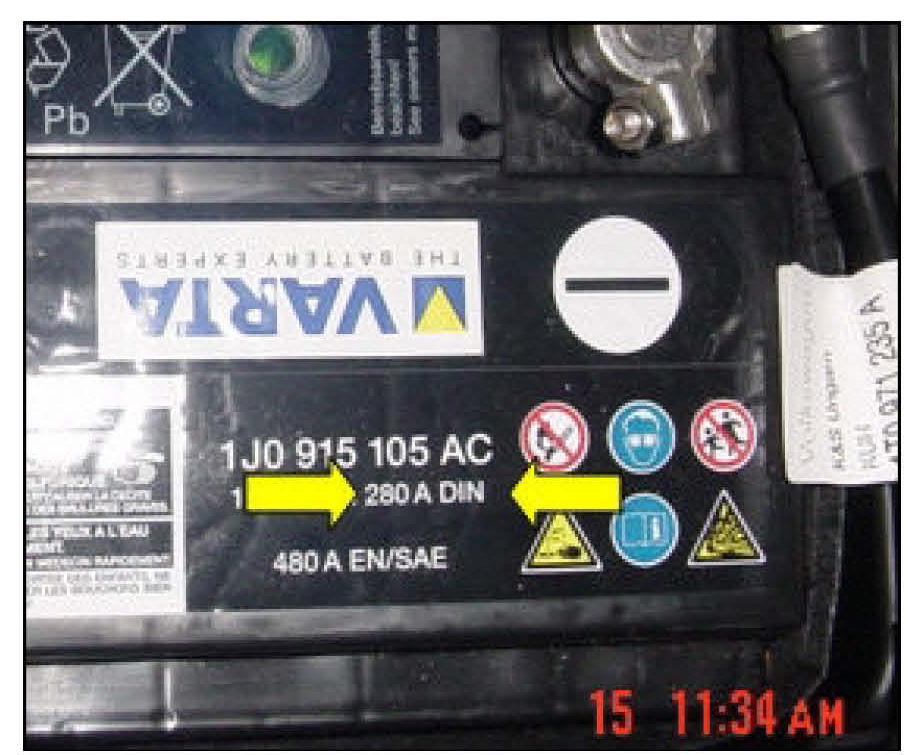
Always use actual DIN rating as shown on
battery label -arrow-.
Tip:
Label shown is for example only. DIN or SAE
specifications may vary from battery to
battery.
If DIN rating is not shown:
^ Use SAE value as printed on battery label.
If using SAE value rating:
^ Midtronics tester menu option must be changed to achieve accurate results.
^ A change from DIN to SAE can be made from the "Other" menu option on Midtronics tester.
Dual System
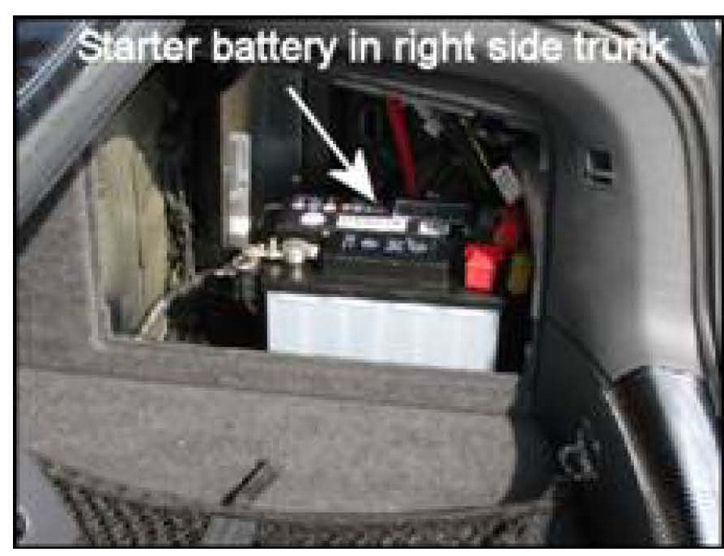
Starter battery
Always use actual DIN rating as shown on
battery label.
^ Starter battery (Standard) located in right
side trunk, as shown: 330 DIN.
On-board accessory battery
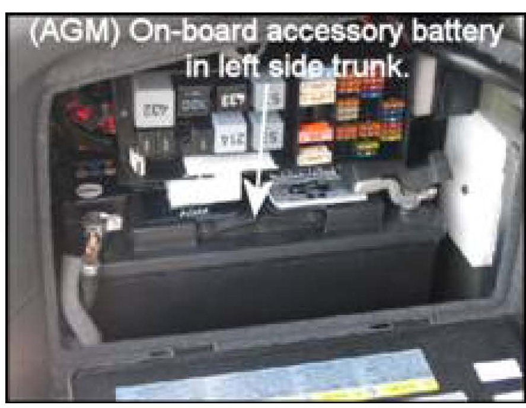
Always use actual DIN rating as shown on
battery label.
^ (AGM) On-board accessory battery located in left side trunk DIN or 520 DIN.
When testing or charging battery installed in vehicle:
^ DO NOT Test/Charge from remote location
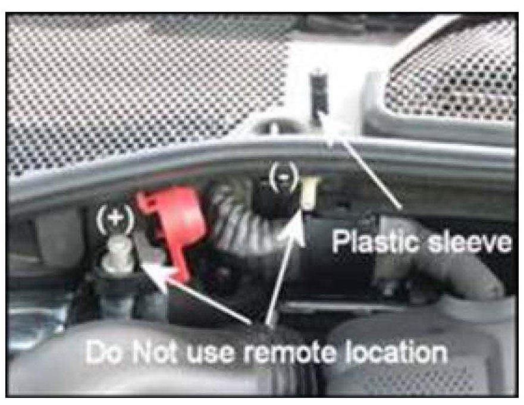
^ DO NOT use remote location (+) or (-), -arrows-, as shown.
^ Test/charge batteries directly, located in
trunk.
Tip:
There is a plastic sleeve on remote
location (-), -arrow-.
2-7 MCR340V, INC-940, Trouble Shooting Error Messages
MCR340V / INC-940 Displays "System Noise" at Beginning of Test
MCR340V and INC-940 may display "System Noise" at beginning of battery test when testing directly at battery.
This is an infrequent and a normal message which may be caused by:
^ Ignition left in "ON" position.
^ Accessories or loads turned ON, with key in "ON" position.
^ Loads running with ignition switched "OFF" such as: cooling fan or after-run coolant pump.
^ Aftermarket equipment (due to improper installation), such as entertainment, security, remote starters, televisions, lighting, etc.).
This may be overcome by verifying:
^ Ignition is switched "OFF".
^ All loads (cooling fan or after-run coolant pump) are OFF prior to testing.
^ Any aftermarket equipment is disconnected from vehicle's electrical system.
Wait a few minutes, and then retest battery again.
Battery Testing Results: Midtronics MCR340V Analyzer vs. INC-940 Charging Station
In some cases, when testing a battery using the MCR340V tester:
Test results may be "Good Battery - Recharge".
However, when attempting to charge the same battery with INC-940 Charger:
Results may be to "Replace Battery" either after testing or during charging process.
Tip:
This is normal since both MCR340V and INC-940 use a conductance test, but the INC-940 also incorporates use of a 150A load test and "sophisticated" charging algorithm which monitors charging state of the battery.
In this case, results of INC-940 should always be used instead of MCR340V.
Charging System Test Results at: "Low Charging Voltage" Using Midtronics MCR340V Analyzer
If performing a charging system test with Midtronics MCR340V tester directly at battery:
Test results may be "Problem - Low Charging Voltage"
This result may be due to a faulty generator, however, DO NOT automatically assume the generator is faulty. The MCR340V is connected at the battery, low charging voltage could be due to excessive voltage drop on generator-battery cable, poor connections, contaminated or faulty grounds in charging system.
To deem the generator faulty:
^ Verify charging voltage and current output, directly at generator, using the 5051 measurement tools functions.
Tip:
Test generator at the back or as close as possible to achieve accurate results.
Tip:
Failure to properly diagnose concern may lead to replacement of unnecessary parts, which could result in a denied warranty claim.
Charging System Test Result at: "Excess Ripple Detected" Using Midtronics MCR340V Analyzer
If performing a charging system test with Midtronics MCR340V tester directly at battery:
Test results may be "Problem - Excess Ripple Detected".
Tip:
Result may be due to periodic "system noise" in vehicles electronics system or possible low battery voltage.
To ensure test results are accurate:
^ Always retest directly at battery and perform any action as directed by Midtronics tester (good, recharge or replace).
^ Perform charging system test again at battery.
Testing/Charging: INC-940 Charging Station -Automatic Mode-
When using INC-940 Battery Charging Station in "Automatic Mode", and testing or charging a deeply discharged battery:
INC-940 may continuously display a message "Are clamps connected?"
In order to test battery:
^ Manually charge battery for 30 minutes and perform test again.
Testing/Charging: INC-940 Charging Station -Manual Mode-
When using INC-940 Battery Charging Station in "Manual Mode", and testing or charging a deeply discharged battery:
INC-940 may display a message "Are clamps connected?" twice.
This is not a result of defective INC-940 test equipment, but is a safety feature of the INC-940 to ensure cables are connected to battery before power is turned ON.
INC-940 Charging Station Always Displays "Check Connections"
INC-940 may constantly display a message to "Check Connections" after cables are connected to battery terminals.
This is most likely due to the sensing probe making contact with the clamp.
Tip:
There is one sensing probe on each clamp, (+) and (-), make sure to check both!
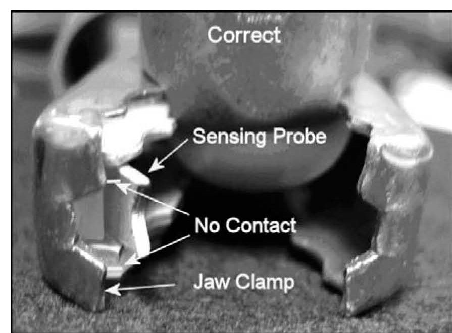
^ There must be no contact between the inside connection and outside jaw of clamp -arrows-.
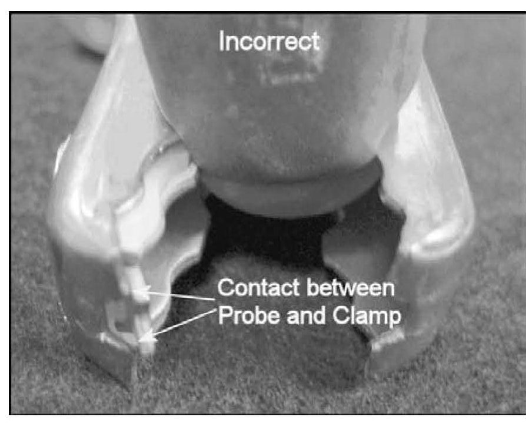
^ Inside connection is bent and touching outside of the clamp, -arrows-.
If clamp is incorrect:
^ Use a small flat tool and gently bend sensing probe so it does not make contact with clamp.
If this does not resolve the issue:
^ Contact Midtronics Corporation Customer Service Department for assistance.
Warranty
Information only.
Required Parts and Tools
No Special Parts or Tools required.
Additional Information
All part and service references provided in this Technical Bulletin are subject to change and/or removal.
Always check with your Parts Dept. and Repair Manuals for the latest information.